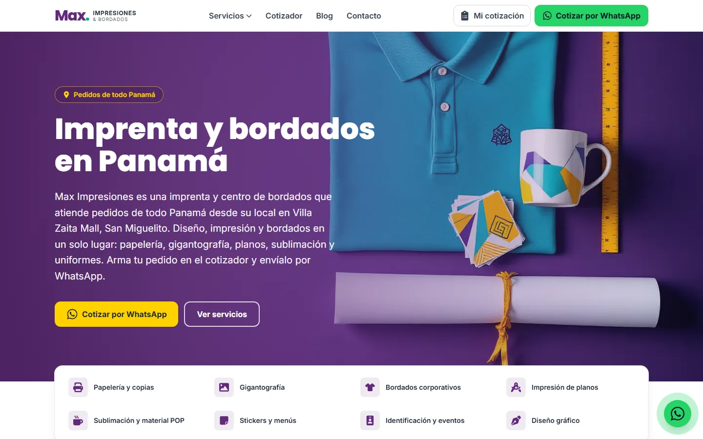
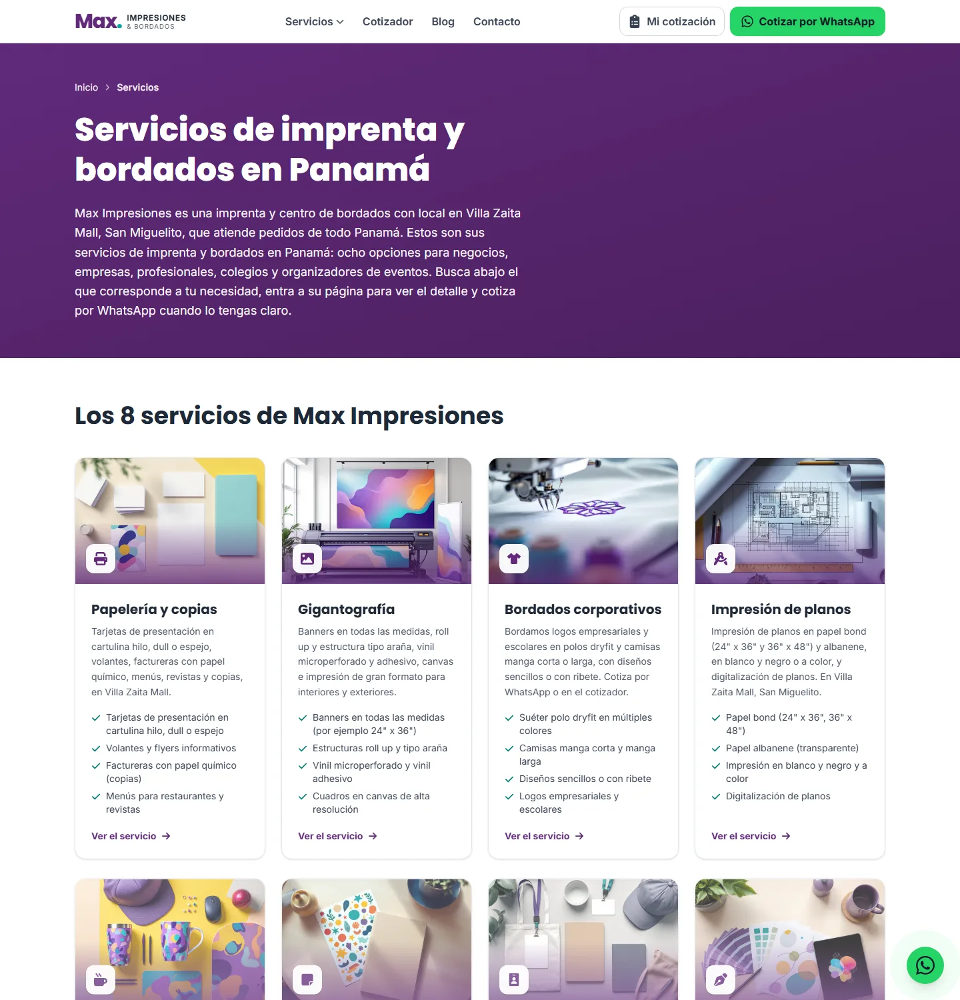
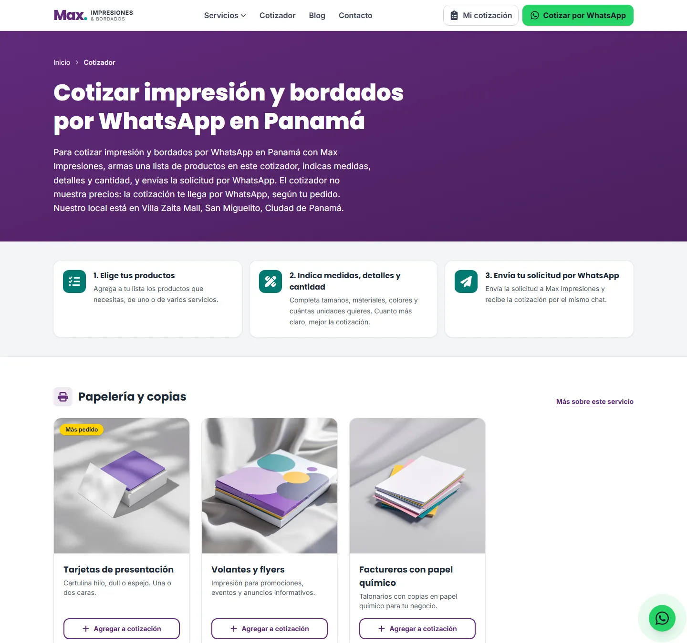
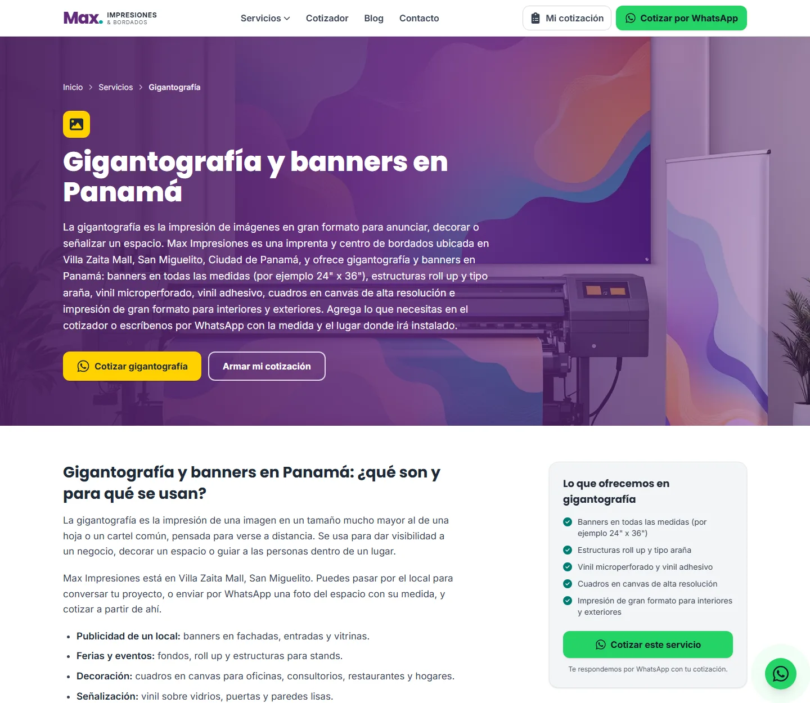
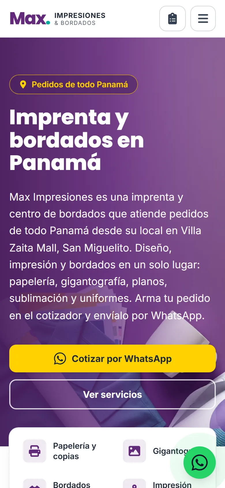
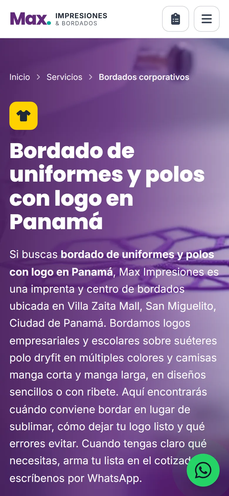
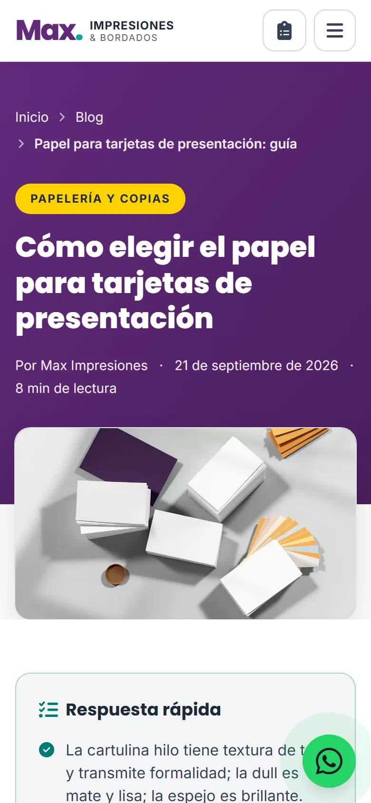
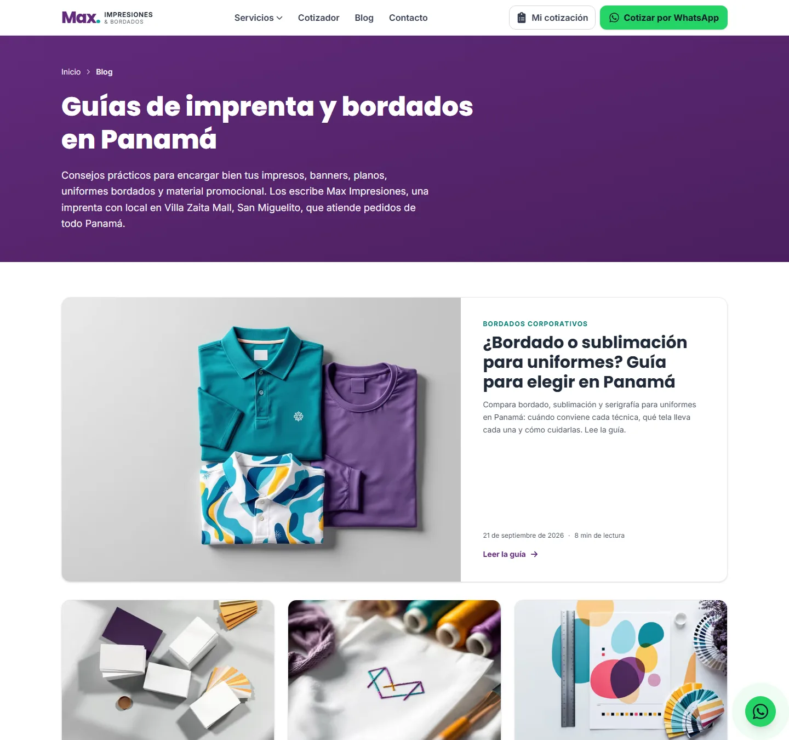

Su nueva página web: qué es, qué hace y cómo funciona
Un recorrido claro, sin tecnicismos, por la página de Max Impresiones que ya está publicada: lo que verá su cliente, cómo ayuda a que la encuentren en Google y qué hay detrás (dominio, servidor, certificado de seguridad).
- Preparado para
- Max Impresiones
- Ubicación
- Villa Zaita Mall · Panamá
- Fecha
- 21 de septiembre de 2026
- Dirección web
- maximpresiones.com
En una mirada
La página ya está en internet, con su propio dominio y candado de seguridad. Estos son los números reales de lo que se construyó.
Lo que verá su cliente
Una portada que dice con claridad qué hace Max Impresiones y dónde está, con un botón de WhatsApp siempre a la vista. Desde ahí, en un toque llega al servicio que necesita.

8 páginas de servicio
Papelería y copias, gigantografía, bordados, planos, sublimación y material POP, stickers y menús, identificación y eventos, y diseño gráfico. Cada una explica materiales, medidas y errores comunes, con preguntas frecuentes y un botón para cotizar.
Cotizador por WhatsApp
El cliente elige productos, agrega medidas o la fecha que la necesita y pulsa Enviar por WhatsApp: usted recibe la lista ya escrita. La lista se conserva aunque cambie de página o recargue.
Ubicación y contacto
Mapa del local en Villa Zaita Mall, teléfono, WhatsApp e Instagram. La página deja claro que atienden pedidos de todo Panamá, no solo de San Miguelito.
Blog con 9 guías
Guías útiles (cómo elegir el papel de una tarjeta, medidas de banners, bordado o sublimación, cómo preparar un archivo…) que responden dudas reales y llevan al cliente al servicio correspondiente.



Y en el celular
La mayoría de sus clientes entrará desde el teléfono. La página se adapta a la pantalla: botones grandes, el carrito de cotización a un toque y el botón de WhatsApp siempre presente.

Portada

Un servicio

Una guía del blog
Cómo ayuda a que los encuentren en Google y en los asistentes de IA
La página se construyó pensando en dos cosas: que Google entienda de qué trata cada página y que asistentes como ChatGPT o Google puedan citar a Max Impresiones cuando alguien pregunte por una imprenta o por bordados en Panamá.

Base técnica lista
- Título y descripción únicos en cada página
- Datos estructurados: negocio local, servicios, preguntas frecuentes y artículos
- Mapa del sitio (sitemap) con las 22 páginas y archivo robots
- Enlaces internos entre servicios y guías
Pensada para las respuestas de IA
- Cada guía abre con una «respuesta rápida» fácil de citar
- Preguntas y respuestas autocontenidas
- Archivo llms.txt que resume el negocio para asistentes de IA
- Canal RSS del blog
Control de calidad automático
Antes de publicar, un verificador revisa decenas de reglas (títulos repetidos, enlaces rotos, imágenes sin descripción, restos de plantillas, marcado sin procesar…). Si algo falla, el cambio no se publica. Hoy mismo detectó y corrigió un defecto de texto en 9 páginas.
Detrás de la página: dominio, hosting y seguridad
Esto es lo que mantiene la página en línea, segura y rápida todos los días.
- Dominio
- maximpresiones.com. La versión con www redirige automáticamente a la principal, para que Google no vea dos páginas iguales. El correo del dominio no se tocó: sigue con su proveedor actual.
- Hosting
- Servidor propio (VPS) administrado por Elemento Web. La página se sirve como archivos ya preparados, lo que la hace rápida y muy difícil de vulnerar: no tiene panel de administración ni base de datos expuestos.
- Certificado SSL (el candado)
- Certificado de Let's Encrypt, emitido el 21 de septiembre de 2026 y con vencimiento el 20 de diciembre de 2026; se renueva automáticamente antes de vencer. Cubre maximpresiones.com y www.maximpresiones.com.
- Seguridad
- Conexión siempre cifrada (HTTPS forzado), cabeceras de seguridad y una política de contenido que impide cargar scripts de terceros. No instala cookies ni herramientas de rastreo.
- Velocidad
- Tipografías propias, imágenes en formatos modernos (AVIF y WebP) y solo 5 KB de programación (JavaScript). La portada pesa unos 22 KB de texto comprimido. En la prueba del 21 de septiembre de 2026 el servidor respondió en unos 0,3 segundos.
- Publicación de cambios
- El código vive en un repositorio privado con historial completo: cada versión se puede recuperar. Cada cambio pasa por las pruebas automáticas y se publica solo; en las publicaciones de hoy tardó menos de un minuto en verse.
- Accesibilidad
- Se adapta a cualquier pantalla, con contraste de colores verificado, navegación con teclado, botones táctiles de tamaño cómodo y respeto a la opción «reducir movimiento» del dispositivo.
Cómo se mantiene y se actualiza
- Cambiar textos, servicios, fotos o datos de contacto: nos lo pide y lo publicamos; en cuanto pasa las pruebas se ve en línea en aproximadamente un minuto.
- Nuevas guías del blog: se agregan con la misma estructura (respuesta rápida, preguntas frecuentes, enlaces) para que sigan sumando búsquedas.
- Precios: por decisión del negocio, la página no publica precios; el cliente los recibe por WhatsApp. Si en algún momento quiere mostrar «desde» en algún producto, es un cambio sencillo.
- Condiciones económicas (página, infraestructura anual y posicionamiento): están en la propuesta comercial del 9 de septiembre de 2026.
Lo que falta de su lado para dejarla al 100 %
La página funciona hoy. Estos datos e insumos mejorarán su confianza y su posicionamiento. Ninguno se inventó: mientras no los tengamos, simplemente no se muestran.